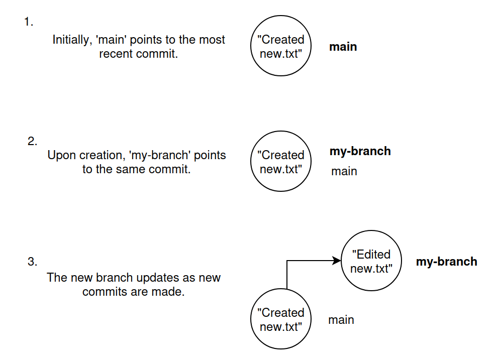

Introduction to git and GitHub
![]()
ICCS - University of Cambridge
ICCS - University of Cambridge
University of Bologna
Learning Outcomes
- Be familiar with the building blocks of git: repositories, commits and branches
- Get started with using git locally on your own projects
- Get started with collaborating on code projects using GitHub
- Gain an appreciation for how useful git can be
First! A few questions about Git and Github
- Who has used any sort of code version control before?
- Who has used Git or Github
- Who wants to do better version control in their projects?
Version Control
Tools like Git and Github exist as solutions to the problem of how to save, share, and collaborate in a structured and safe way.
Useful whether you are working alone or in a team!
Why Git?
- Distributed version control
- Lightweight but powerful branching and merging
- High performance/Scalable
- Excellent data integrity protection
- Open source with a rich ecosystem, flexible and customisable
- Fine grained control over committing, viewing history and reverting
In today’s course we will:
- Create a local git repository
- Create a git commit in your repository
- Create a git branch in your repository
- Fork a remote repository and check it out on your local machine
- Put in a PR to have our changes merged back to the remote repo
What is a Git repository?
- A place where you can store your code, your files, and each file’s revision history.
- Contains a .git folder at the root which does all the git magic behind the scenes.
Exercise 1, creating a git repository:
- Navigate to a folder you want to work in, and create a new folder to contain your repository:
$ cd your_dir
$ mkdir your_folder
$ cd your_folder
$ git init
.git
A hidden “.git” folder has been created in your folder. This contains everything Git needs to work.
What is a Git commit?
- You can think of a commit as a snapshot of your work at a particular time
- You can navigate between commits easily with git
- This allows you to switch easily between different versions of your work
- When you commit, rather than saving all the files in a project every time, git is efficient and only stores the files which have been changed between the previous commit and your current one
- The commit also stores a reference to its parent commit
Commiting is a three part process:
- Modify: change the file in your working tree, ie go in and edit the file as usual
- Stage: Tell git that you would like this file to be included in your next commit
- Commit: Tell git to take a snapshot of the files you staged
At each step in the process, the file is stored in a different area:
git commit
This means that Git has four main states that your files can be in:
- Untracked: You’ve created a new file and not told git to keep track of it.
- Modified: You’ve changed a file that git already has a record of, but have not told git to include these changes in your next commit. We say these files are in the working tree.
- Staged: You’ve told git to include the file next time you do a commit. We say these files are in the staging area.
- Committed: The file is saved in it’s present state in the most recent commit.
Exercise 2a, create an untracked file:
Exercise 2a, create an untracked file:
- Create a new file in your repository.
$ touch new.txt
$ code new.txt
Lets check what git can see…
$ git status
git status
$ git status
On branch main
No commits yet
Untracked files:
(use "git add ..." to include in what will be committed)
new.txt
nothing added to commit but untracked files present (use "git add" to track)
git status
Highlights your working branch -> main
Reports commit status -> none yet
Highlights untracked files -> new.txt
Proposes adding these to git with ‘git add’
Exercise 2b, add the untracked file to the staging area:
Exercise 2b, add the untracked file to the staging area:
Try these commands…
$ git add .
$ git status
git add
$ git status
On branch main
No commits yet
Changes to be committed:
(use "git rm --cached ..." to unstage)
new file: new.txt
git add
Moves file(s) into “Staging area” ready for commit
Exercise 2c, commiting your changes:
Exercise 2c, commiting your changes:
Commit your file to the local git repo
$ git commit -m "Created new.txt"
‘git commit’ >>>> tells git you want to commit
‘-m “Comment”’ >>>> adds a description to the log for this commit. This is important as it tells you and others what the commit intent is.
git commit
$ git commit -m "Created new.txt"
[main (root-commit) f22b25e] Created new.txt
1 file changed, 1 insertion(+)
create mode 100644 new.txt
$ git status
On branch main
nothing to commit, working tree clean
git log
$ git log
commit f22b25e3233b4645dabd0d81e651fe074bd8e73b
Author: James Emberton
Date: Tues May 27 09:51:46 2024 -0400
Create new.txt
git log
Displays commits in reverse chronological order.
Includes full identifier, author and date
What is a Git branch?
- A branch is a pointer to a git commit
- It says “I want to include the work of this commit and all of its parent commits.”
- We can use the
checkoutcommand to switch between different branches and commits
Exercise 3, creating a git branch:

Exercise 3, creating a git branch and checking it out
Create a new branch using:
git branch my-shiny-new-branchCheckout the branch using:
git checkout my-shiny-new-branchMake a change in your new branch by editing new.txt and committing the changes.
Note: you can combine the first two steps into one using
git checkout -b my-shiny-new-branch
Exercise 4, switching between branches
Exercise 4, switching between branches
return to the main branch using
git checkout mainopen the new.txt file, what’s inside?
make a new file,
new_2.txtcommit this new file to the main branch
switch back to your other branch and inspect the files again
Note: you can use
git checkout -as a shortcut for returning to the previous branch you checked out.
Ways of working with a remote repository
A remote repository is one stored in the cloud. We will be using GitHub to do this today.
There are two different ways to copy a remote repository so that you can work on it locally:
- clone: This makes a copy locally which is closely linked to the remote version. Your local branches can be synced to branches in the original.
- fork: This makes another separate version of the repo remotely that you own. Once you have forked a repo remotely, you can then clone it to your local machine.
Branches created locally can’t be synced to branches in the original repo, they are synced to your forked repo instead. You can still open pull requests to the original if you would like to make a contribution to it.
To clone or to fork?
Use a clone when:
You are collaborating directly and actively with the owner of the repo (e.g. it is your research team, or you) OR all of the following is true:
It is owned by someone else and you are happy not to have ownership of the codebase
You have permission to push branches up to the repo
You want easy access to the latest changes made by others to the central repository
You want the main branch in the repo to be updated and edited by others working on the project
To clone or to fork?
Use a fork when:
- The owner of the repo is not someone you are actively collaborating with
- You want to take the development of the code in a different direction from the original owner of the repo
- You want full ownership over your version of the codebase
- You want complete control over other’s contributions to the codebase
- You do not want the main branch to receive updates from those editing the existing repo
- Or you do not have permission to push branches directly to the original repo
Working with remote repositories
Collaborative git with GitHub
Warning
You must have already created a github account and connected your local git repo to it before you can do these exercises
Navigate to https://github.com/Cambridge-ICCS and find the ‘git-intro-iccs-summer-school-2024’ repo
We will fork this repo, clone the fork to our local computers, make edits and then try merging these back into the original repo.
Exercise 5:
- From Github, Cambridge-ICCS/git-intro-iccs-summer-school-2024


Cloning from GitHub
Your forked repo only exists in Github. To work on it locally it needs to be copied to your local computer.
$ git clone https://github.com/YOUR-USERNAME/YOUR-REPOSITORY
Warning
Clone repo to a new working folder.
Do not clone into an existing local git repo.
- Choose/create a file to edit, and then commit.
- Next
pushthe changes up to the remote repo.
- The first time you do this on a new branch, you will need to set up a remote one to track it:
git push --set-upstream origin your-branch-name
- For any commits after that on the branch you can use
git pushon it’s own when you are on the branch you want to push.
Pull requests
The final step is to put in a pull request (PR) to the original repo that we forked from.
A pull request is how we signal to the repo owner that we want to merge in our changes.
Depending on the code and the repo, you may not be able to merge directly. - Reviews by one or more developers who may suggest/require edits to you code - Pass testing
Learning Outcomes
- Be familiar with the building blocks of git: repositories, commits and branches
- Get started with using git locally on your own projects
- Get started with collaborating on code projects using GitHub
- Gain an appreciation for how useful git can be
Final thoughts?
Anything you’d like to revisit or build on from today?
Please come and visit us at a code clinic.
Book a slot in our “ICCS Summer School Code Clinic spreadsheet”, which is linked in the online agenda here:
https://cambridge-iccs.github.io/summerschool24
This course and the intermediate git course will also be made available on YouTube.
This is also a nice visual resource for learning git: